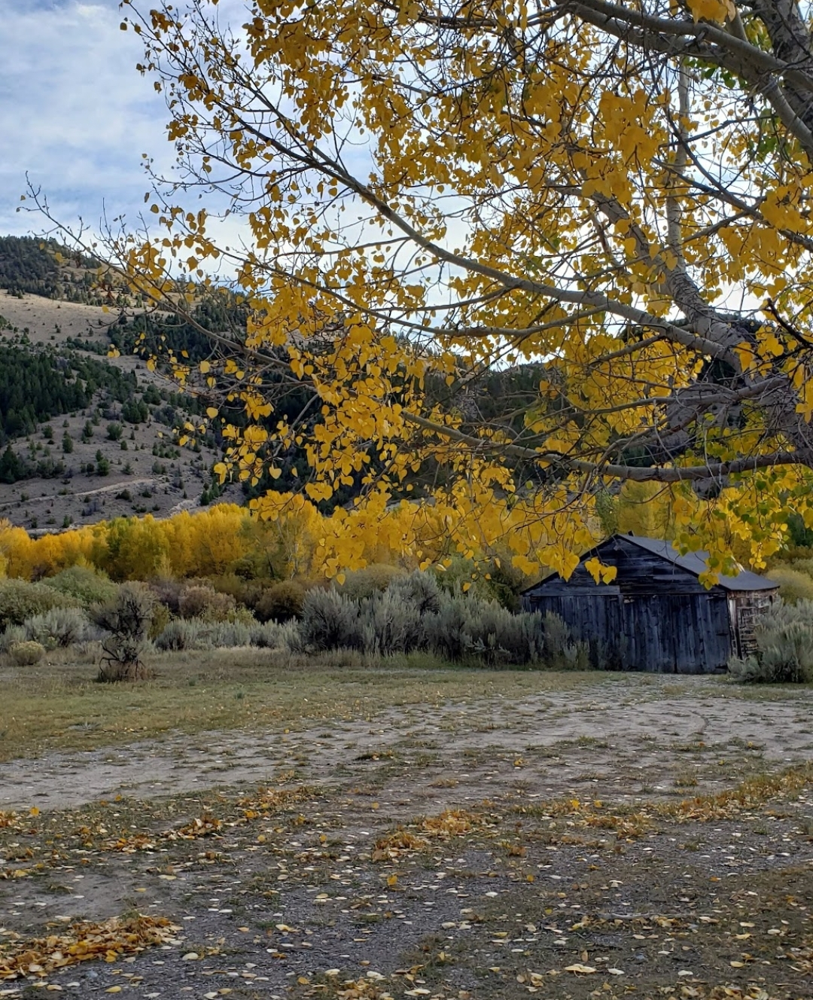
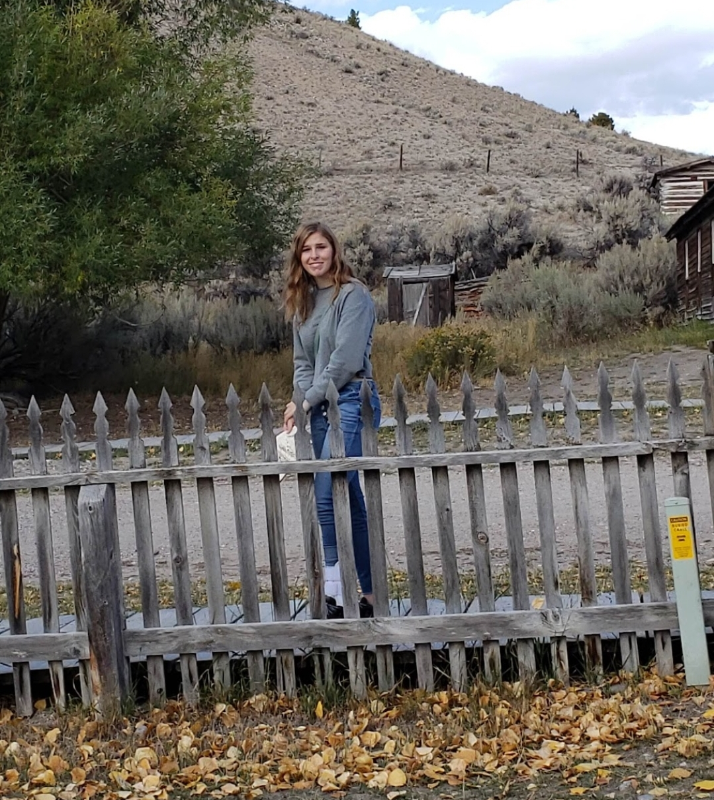
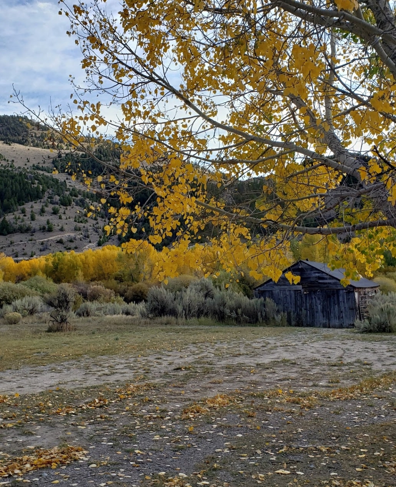
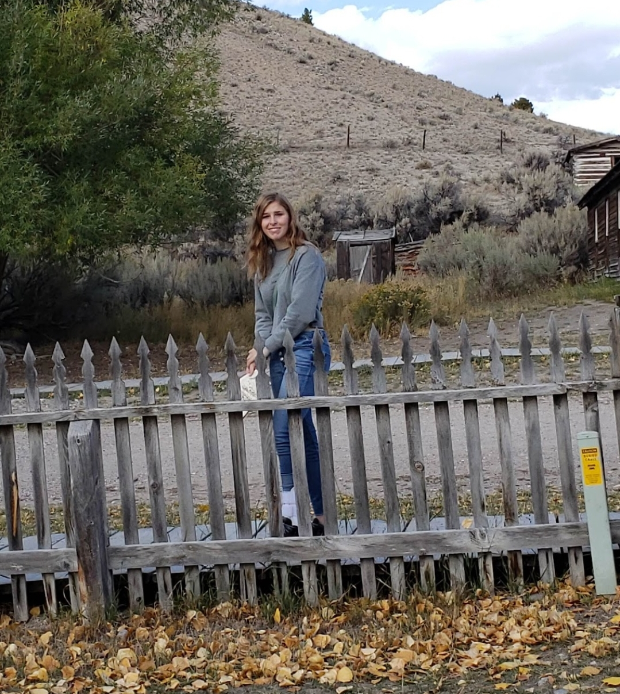

Bannack
September 27, 2019
We began the day by taking Loua for a walk, it was a perfect 70 degree day with a slight breeze. We then departed in my car shortly afterwards, venturing off along i 90.
Once we reached Whitehall, we turned to a road skating alongside forboding peaks of the Tabacoo Root range. The fall colors (even though not as good as in New Hampshire), added a variety of striking yellow hues to the arid landscape, only superceded by the golden locks of my favorite passenger.
We pulled up to the nearly abandoned parking lot, paid our fee and ventured into the great, spooky unkown. I can't regale you with a whole bunch of specifics, but all in all, we saw some ghosts, and were in a town, so what more can you expect. What I can say is that I got to spend nearly a whole day with my favorite person in the world.
After the excitement from seeing the abandonded attic where they stuck dying children who had scarlet fever, we went to Dairy Queen to get some weirdly purple root beer floats.
 


